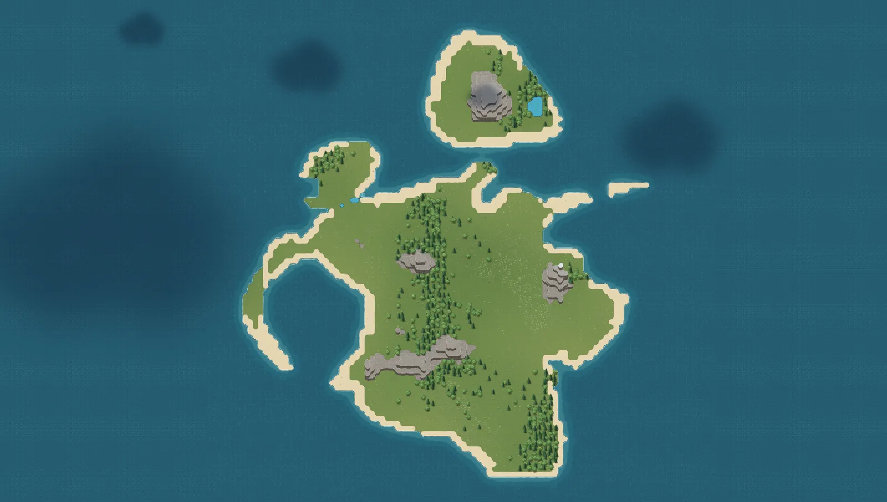
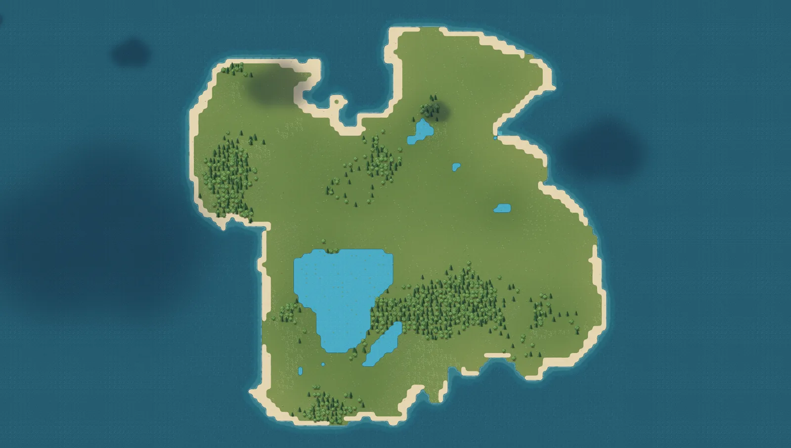
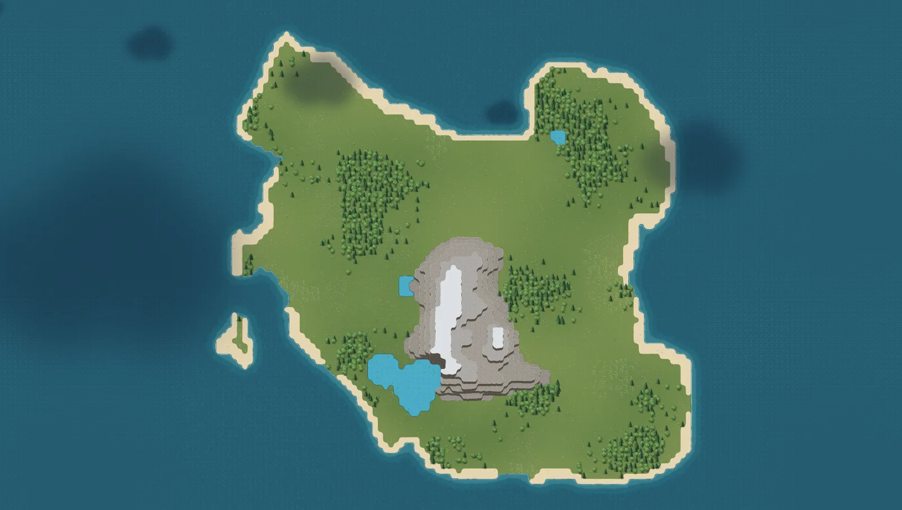
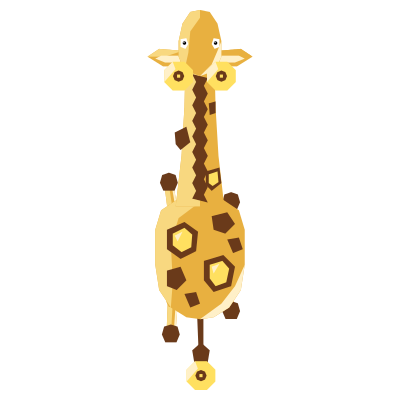

The island is yours first entry
It is generated for you and owned by your wallet, not by a server.
An island farming & creature game
Unclaimed Acres gives you a generated island of your own: beaches, forests and terraced snowy mountains to wander, crops to raise from seed, and gentle creatures to get to know. Keep notes. Take your time.
works with WAX Cloud Wallet, Wombat & Anchor
Every island is generated for you and owned by your wallet. No two are alike, so every chart in this journal is a first edition.
Landforms spotted so far:
More than 50 creatures live on these islands, from foxes and red pandas to kitsune and crystal turtles. Some are shy, some are curious, and every one deserves a page in your journal.

 from above
from abovesleepy, mostly in trees

 from above
from abovecounted the tails twice
More than 60 crops, each drawn from seed to harvest: familiar ones like wheat and tomatoes, and stranger finds like moonbloom and the egg plant that grows actual eggs.
From the drying press




This journal belongs to
your name goes here, once you connect


 fox, mid-leap
fox, mid-leap
 Tomatoes · stage vii
Tomatoes · stage vii

Each new island means a fresh chart. Better bring more paper.

 from above
from aboveslow, sparkly, unbothered

 from above
from aboveonly notice it at dusk

 from above
from abovegone before the sketch dried

 from above
from aboveantlers in flower

 from above
from abovewatching me back


from abovelights the path home
eight pinned, more than forty still to find


One of 60 and more. The rest are still growing somewhere.
It is generated for you and owned by your wallet, not by a server.
Crops move through their stages from seed to harvest. Check in when it suits you.
More than 50 creatures, from foxes to kitsune and lantern giraffes. Get to know them slowly. Nothing here is a race.
Unclaimed Acres is still in development. These are early pages; more are being written.
The next page
Connect a wallet and start a journal of your own: one island, a field of seeds and a few curious neighbours.
WAX Cloud Wallet · Wombat · Anchor